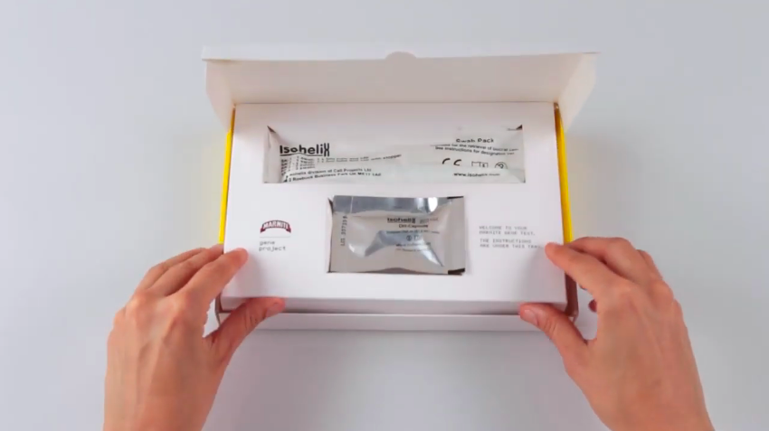
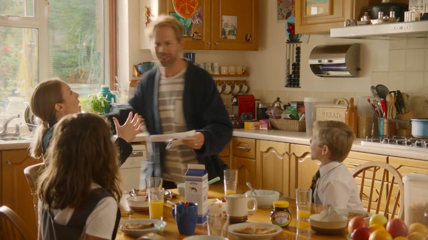

Today's Topic
食の好き嫌いが遺伝子レベルでわかる？
どうしても苦手な食べ物、味、誰にでも少しはありますよね。でも、家族や友人はそれが大好きなのに、自分は全く好きになれない、なんてことがあると意外と大変ですよね笑 でもその違いが生じるのは遺伝子のせいかもしれません。
イギリス発祥で、オーストラリアでも国民的な発酵食品の「Marmite（マーマイト）」が自社の製品であるマーマイトを好きか嫌いかを遺伝子レベルでチェックするキットを開発したそうです。
キットには採血の用具が入っていて、自分で採血を行い、それをセンターに郵送して遺伝子解析を行ってもらうみたいですね。マーマイト好き遺伝子、マーマイト嫌い遺伝子、とかあるのでしょうか。。なぜこんな取り組みをしたんでしょうか。
マーマイトはビタミンDを多く含むため、国民食として誰もが認知するものの、その味の好き嫌いははっきり別れるらしいです。国民的ではないけど(国民的ですか？)、日本で言うドクターペッパーみたいな存在ですかね。(私は飲めない。) そこで、マーマイトは、マーマイト自身が家族やカップルに引き起こしているであろう「私は好きなのに！」「僕は無理なんだよ！」という論争を科学的に解決してあげようとしたんですね笑
"「すばらしい！我が家全員がマーマイト大好き遺伝子だ！」と喜ぶ家族もいれば、もう食べなくてもいいことに安堵する人もいましたが、隠れマーマイトファンという潜在層へのアプローチにも繋がり、結果的にはマーマイトの売上が14%アップする結果となりました。" と、記事にありました。
「あなたは遺伝子レベルでマーマイトが好きです」って言われたら一気にマーマイトとの繋がりが強くなったように錯覚してしまいますよね笑 逆も然りですが。自分で採血をして郵送する、というのは人々のハードルもコストも中々高いような気がしますが、結果として売り上げ14%アップ。海外らしい大胆な施策でした。